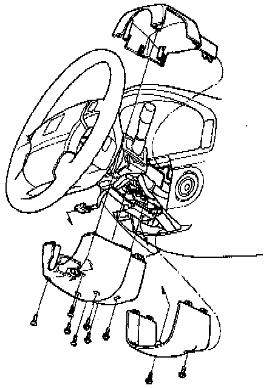
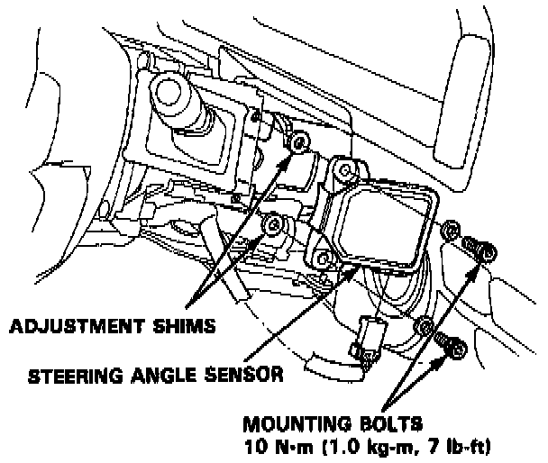
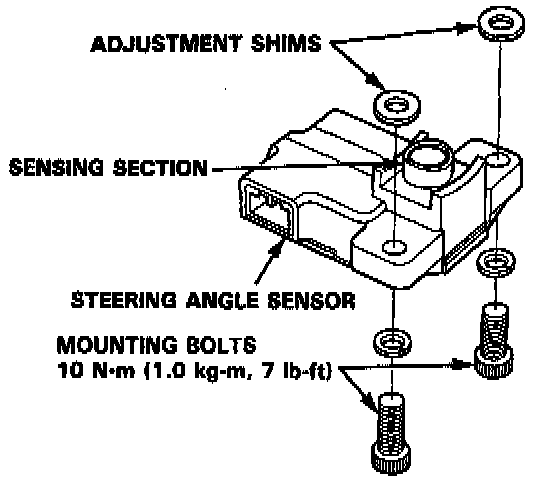
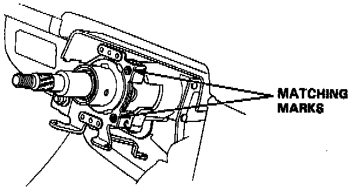
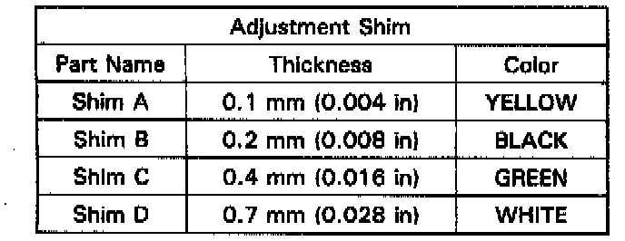
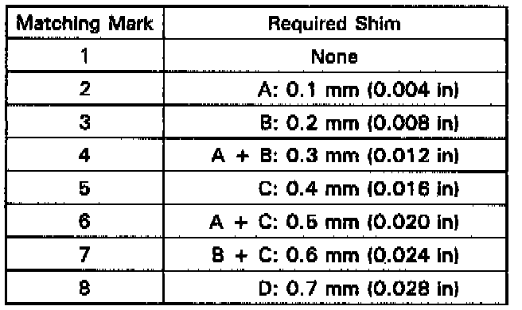

Steering Angle Sensor: Service and Repair

1. Remove the column covers.
2. Disconnect the steering angle sensor 5P connector.

3. Remove the steering angle sensor mounting bolts.
NOTE: There may be adjustment shims between the steering angle sensor and bracket. Take care not to drop or lose them.
CAUTION: The steering angle sensor is the precision instrument. Do not strike or drop it. The sensing section of the steering angle sensor is covered with the extremely thin protection film. Handle the steering angle sensor with care not to touch the sensing section with a hand and do not allow any parts and material to come in contact with the section.

4. Set the adjustment shims on the steering angle sensor and install the steering angle sensor on the steering column with care not to drop the shims. Tighten the mounting bolts.
NOTE: After installation, check that the shims are installed properly and the steering angle sensor contacts with the bracket.
CAUTION: Do not apply grease or adhesive agent to the adjustment shims with the intention of holding the shims in place or prevention of the shims from dropping.
5. Connect the steering angle sensor 5P connector.
6. Install the column cover.
7. Perform the steering angle sensor system check to check that the steering angle sensor functions properly. If there is a problem, perform the troubleshooting for Diagnostic Trouble Code (DTC) 2- 1.
Adjustment Shim Selection
NOTE: The steering shaft-to-steering angle sensor clearance is controlled to stabilize the output of the steering angle sensor. Select the correct adjustment shims that match with the respective matching marks stamped on the steering column.
CAUTION: It is necessary to select the shims only when the steering column assembly (without the steering angle sensor) has been replaced. Use the original adjustment shims when the steering angle sensor is replaced.

The matching marks (numerical letter 1 through 8) are stamped on the steering column as shown.


Select the adjustment shims according to the tables.